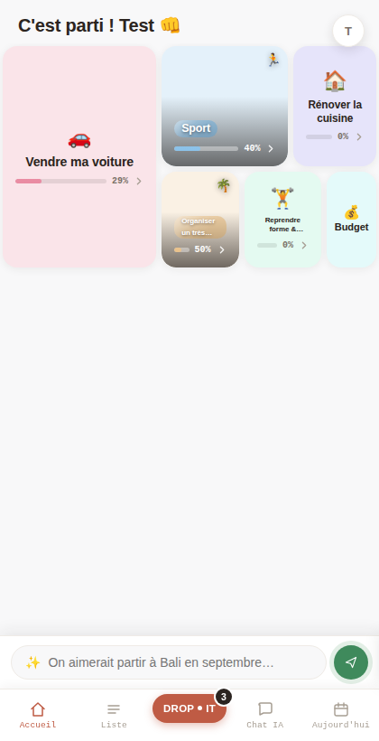
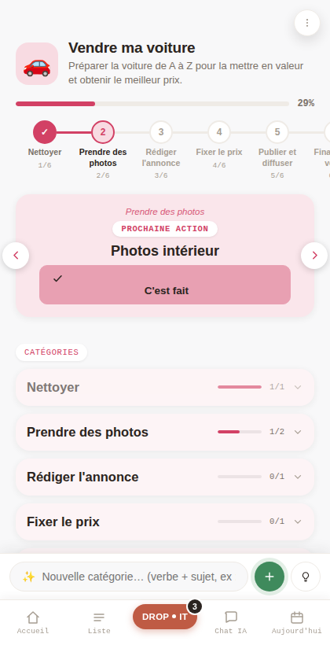

14 commits, une appli transformée — et ce soir, la production n'affichait rien.
NarrationAujourd'hui, les tuiles de l'accueil ont reçu de vraies photos, une barre de progression, un nouveau bouton Drop it. Sur GitHub, tout était en ligne. Sur l'écran de l'utilisateur, rien ne bougeait.
Pour comprendre pourquoi, il faut revenir au tout début de la journée.
2026-09-28 · Claude Code (cloud) · lecture ~6 min
La commande · 02
La phrase qui a lancé la journée.
NarrationPas un cahier des charges. Une phrase dictée, prise telle quelle.
Message reçu
"Je veux lancer le chantier du changement de lot de la page d'accueil avec les photos. Et la petite icône dans le coin"
Sauf qu'un chantier plus ancien disait presque le contraire.
L'enjeu · 03
Une tuile a une seconde pour dire de quoi il s'agit.
NarrationL'accueil de Dropit est une mosaïque : un projet, une tuile. Jusqu'ici, une icône sur un fond de couleur. Le pari de la journée : une photo se reconnaît plus vite.
Terme à retenir
Treemap
Une mosaïque où la taille de chaque tuile reflète le poids du projet : plus il a de tâches, plus il est grand.
Le pari avait un problème : le plan de départ reposait sur une IA qui génère des images.
Le recadrage · 04
Fini l'image générée : de vraies photos.
NarrationLe cadrage du 8 septembre prévoyait une image générée par IA, révélée tuile par tuile au fil des tâches. Bloqué : aucun service d'image n'avait été choisi. La journée a tranché autrement.
Avant · cadrage du 8 sept.
Une image générée
Générée par un service tiers, jamais choisi
Révélée tuile par tuile, selon les tâches faites
Chantier bloqué en attente de ce service
Après · décidé ce matin
Une vraie photo
Photo Pexels en fond de tuile
Une seule par projet, sauvegardée
L'icône reste, en petit badge dans le coin
Restait à décider comment une photo peut « représenter » une icône.
La méthode · 05
Quatre réflexes qui reviennent toute la journée.
NarrationRien ne part en ligne sans preuve, et une supposition ne compte jamais comme une preuve.
1 · Vrai navigateur
Tester avant de pousser
Playwright sur l'app réelle, données simulées
Jamais « ça devrait marcher »
2 · La base avant l'intuition
Lire ce qui s'est passé
Requêtes réelles sur Supabase
Les bugs de sauvegarde ont été prouvés, pas devinés
3 · Un dossier par livraison
Les preuves restent
9 dossiers de scripts et de captures
Versionnés dans le dépôt, pas dans le bac à sable
4 · Un journal qui ne se réécrit pas
Une ligne par événement
Le fichier d'état ne fait que s'allonger
On relit l'histoire, on ne la réécrit pas
Premier livrable : faire dire à la photo la même chose que l'icône.
Livrable 1 · 06
La photo, c'est l'icône en vrai.
NarrationChaque projet tombe dans un domaine parmi sept. Le domaine choisit à la fois l'icône et les mots de la recherche de photo : les deux ne peuvent plus se contredire.
Objectif
Une photo qui colle à l'icône
Une voiture en icône, une voiture en photo.
Comment
Une règle, pas deux choix
Sept domaines fixes, un seul décide de tout
Requête = mots-clés du domaine + détail du projet
Visage de face exclu ; mains et silhouettes acceptées
Commits 75b24fd · 3980de5. Limite : le filtre de visages lit le texte descriptif de la photo, il n'est pas infaillible.
Et quand la photo tombe mal ? Il fallait un bouton pour en changer.
Livrable 2 · 07
Un bouton pour changer d'avis, et une course perdue d'avance.
Narration« Changer la photo » relance la recherche. Sauf que l'écran redessine les tuiles en arrière-plan et relançait, lui, une recherche automatique avec le titre brut. La plus rapide gagnait, et ce n'était pas celle qu'on voulait.
1
Le clic
Le projet est reclassé dans un domaine à partir de son titre et de son icône, par le modèle rapide.
2
La course
Pendant ce temps, l'écran se redessine et lance le remplissage automatique, plus rapide que la reclassification.
3
Le correctif
Le drapeau anti-doublon est posé avant tout redessin. Vérifié : un seul appel photo, avec la bonne requête.
Le bouton marchait. Mais à la reconnexion, l'ancienne photo revenait.
Le grain de sable · 08
Ta photo change… puis l'ancienne revient.
NarrationLe changement s'affichait, puis disparaissait à la reconnexion. Premier réflexe : ne pas deviner, aller lire la base.
1
Le constat
La base : 39 appels photo en 6 minutes pour 8 projets, et la date de dernière sauvegarde qui ne bouge jamais.
2
Un premier correctif, insuffisant
Réessayer 4 fois de suite au lieu d'une seule. Ça ne suffisait pas.
3
La vraie cause
Web et application ouverts en même temps : chaque session remplit ses photos et écrase celle de l'autre.
4
Le correctif
Attendre un temps au hasard avant chaque nouvel essai, 5 essais au total. Testé avec deux pages simultanées : 4 photos, 1 conflit résolu, rien de perdu.
Terme à retenir
Backoff aléatoire
Attendre un délai au hasard avant de réessayer, pour que deux sessions en conflit ne repartent pas au même instant.
Un bug de sauvegarde réglé. Restait un défaut bien plus visible : les titres coupés.
Livrable 3 · 09
Le titre coupé cachait trois bugs, pas un.
NarrationChaque correctif semblait marcher, puis un autre titre restait coupé. Il a fallu mesurer la hauteur réelle du texte, avec et sans coupure, pour les voir un par un.
Bug 1
Le titre écrasé
Le conteneur rétrécissait le titre sous ses deux lignes. Il manquait une seule règle de style.
Bug 2
Une largeur surestimée
Le calcul de la taille de police oubliait environ 15 px de marge de chaque côté.
Bug 3
Une lichette de 3e ligne
La coupe se fait au bord de la marge, pas du texte : 3 px de la ligne suivante dépassaient sous l'encadré.
Terme à retenir
Troncature multi-ligne
Couper un texte après un nombre de lignes fixé et finir par « … ». Elle coupe là où le style le lui dit, pas là où le texte s'arrête.
Limite assumée : un titre de 4-5 mots sur une tuile étroite finit encore par « … », à la taille minimale lisible (8 px).
Et ce n'était que l'accueil. Le reste du lot changeait quatre écrans.
Livrable 4 · 10
Sept changements d'un coup, sur quatre écrans.
NarrationBarre de progression à la place de l'anneau, icônes sans cadre, salutation en français, Drop it au centre de la barre de navigation, en-tête Drop Zone façon page d'accueil publique, liste plus nette, et une fenêtre projet avec sa barre d'étapes.
Accueil

Fenêtre projet

Captures du banc de test, données fictives.
Un détail a failli tout gâcher : le bouton Drop it existait en double.
Livrable 5 · 11
Le bouton Drop it existait en double.
NarrationSur l'écran projet, deux barres de navigation vivent dans la page en même temps. Un clic sur la mauvaise ne fait rien. Un compteur mis à jour sur une seule des deux ment sur l'autre.
Tout marchait en test. Restait à le voir marcher en vrai.
Le retournement · 12
Tout était juste dans le code. La production montrait l'ancienne version.
NarrationLe dernier lot était bien sur GitHub. Mais le dernier déploiement de production affichait un commit plus ancien.
1
Vérifié côté git
Le commit b1aa1ce est bien sur main.
2
Vérifié côté Cloudflare, par toi
Le dernier déploiement de production est c5b5435, daté après b1aa1ce.
3
Le geste
Relancer le déploiement de la ligne b1aa1ce. Réponse : « ça a marché ».
4
La cause
Non prouvée : réglage de la branche de production, plusieurs projets Pages sur le même dépôt, ou intégration GitHub à réinstaller.
Terme à retenir
Production ou preview
Preview : une version d'essai créée à chaque push. Production : ce que voient vraiment tes utilisateurs sur le domaine.
Pour ne plus dépendre de toi pour le savoir, il manque un jeton.
Les chiffres · 13
Ce que disent les horodatages git.
NarrationLe temps actif ne se lit pas dans git : la journée compte de longues pauses. Ce qui se compte, c'est ce qui est sorti.
15 h 49
d'amplitude, de 06:36 à 22:25, avec deux pauses de plus de 2 h : ce n'est pas du temps de travail
14
commits, tous poussés sur main
9
dossiers de preuves : scripts et captures
0
erreur JS sur les 4 écrans du lot
Reste une question qui fâche : qui a décidé quoi ?
Qui décide quoi · 14
13 commits sur 14 viennent d'une demande de l'utilisateur.
NarrationLes 14 commits sont signés Claude, le code aussi. Mais chaque virage est venu de l'utilisateur : des photos plutôt qu'une image générée, 70 % d'opacité puis retour à 100 %, l'ordre des chantiers. Le dernier commit est une note d'état.
Décidé par l'utilisateur
Une banque de photos plutôt qu'une image générée
Photo à 100 % d'opacité, après un essai à 70 %
L'icône reste, en petit badge
Quoi corriger, et dans quel ordre
Fait par Claude
Diagnostics en lisant la base réelle
Correctifs, testés dans un vrai navigateur
Journal, dossiers de preuves, cockpit
Aucune clé secrète côté client
Il reste ce qui dépend de toi, maintenant.
La checklist de sortie · 15
Ce qui est fini. Ce qui dépend de toi.
Lot visuel en production, déployé à la main
Journal de session, historique et playbook enregistrés
Cockpit mis à jour
Ce deck, publié
Regarder le titre blanc sur une vraie photo, en production
Enregistrer le jeton Cloudflare (permission Pages, en édition), l'accès réseau et l'identifiant de compte
Ouvrir une nouvelle session pour que je déploie et vérifie seul
Et une dernière chose que personne ne te dit.
Le truc que personne ne te dit · 16
Un zéro peut être un silence.
NarrationAujourd'hui, une commande bloquée par le réseau a rendu du vide. Compté comme « zéro résultat », il a fait croire que le bouton n'existait pas en production. Un titre corrigé qui « semble » bon, quatre essais qui « suffisent » : trois fois la même erreur, prendre l'absence de mauvaise nouvelle pour une bonne nouvelle.
Terme à retenir
Faux négatif
Un test qui ne trouve rien parce qu'il n'a rien pu regarder, et non parce qu'il n'y a rien à trouver.
Alors la prochaine fois, on regarde ce qui est vraiment déployé.
La suite · 17
14 commits, et un seul compte : celui que la production affiche.
NarrationLe code est fini. Il reste une seule action : enregistrer le jeton Cloudflare et l'accès réseau, puis ouvrir une nouvelle session.
Prochain épisode : la production se vérifie toute seule, après chaque push.